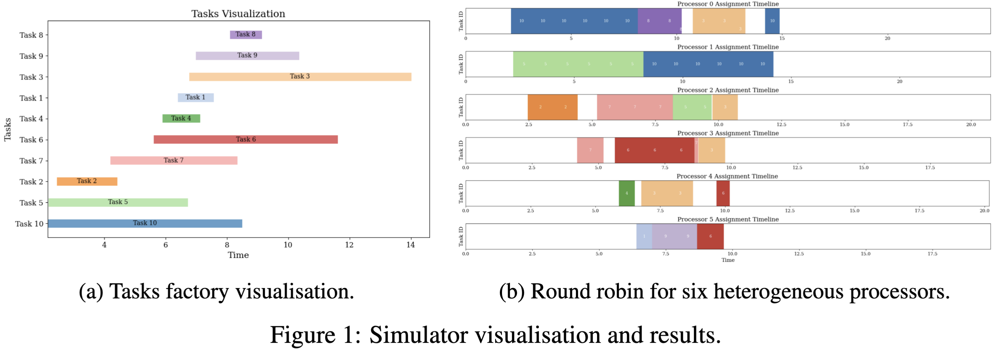
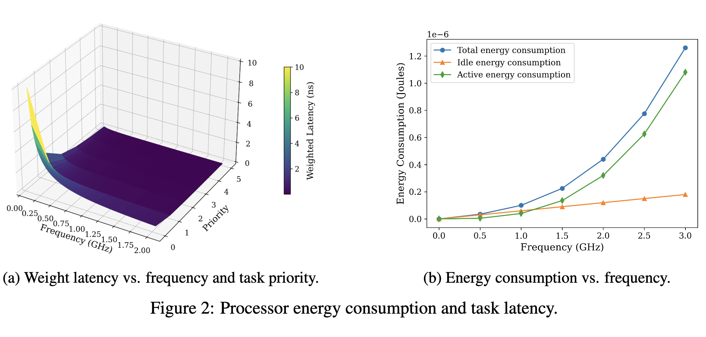
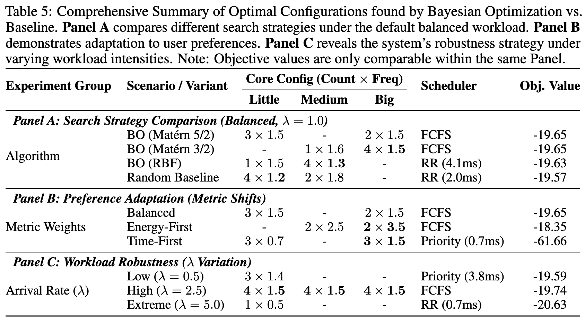
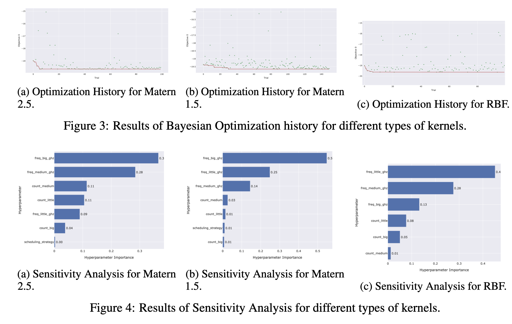
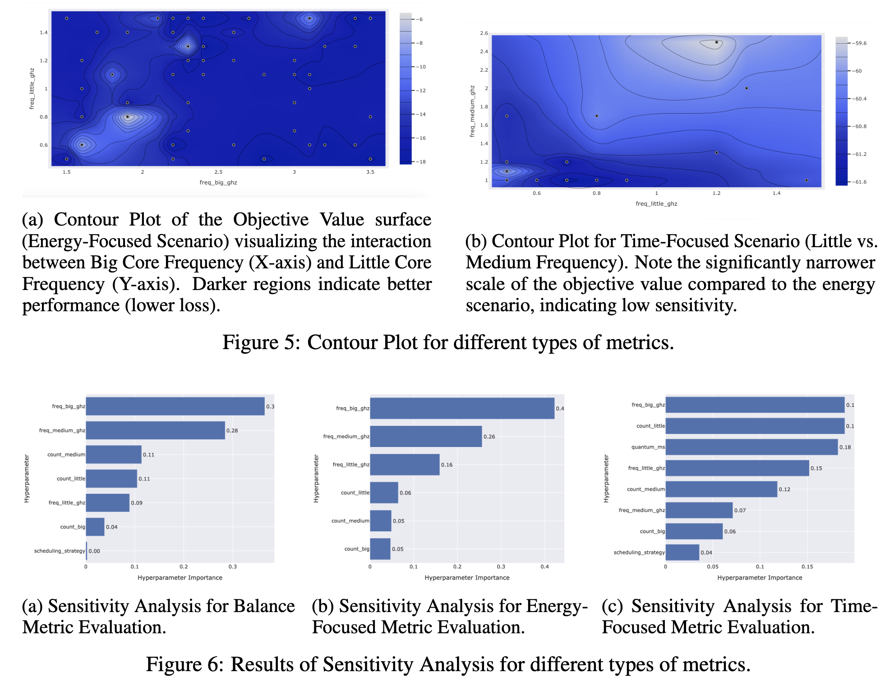
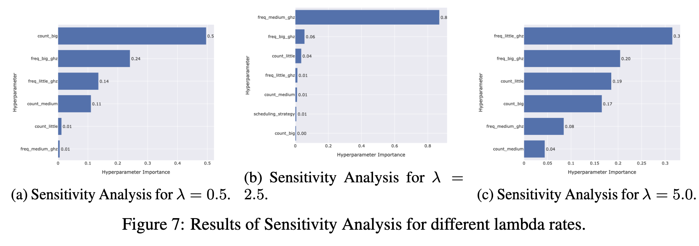
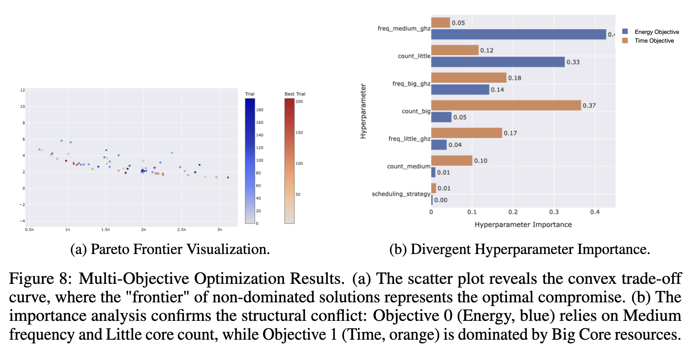

Abstract
In the post-Dennard era, optimizing embedded systems requires navigating complex trade-offs between energy efficiency and latency. Traditional heuristic tuning is often inefficient in such high-dimensional, non-smooth landscapes. In this work, we propose a Bayesian Optimization framework using Gaussian Processes to automate the search for optimal scheduling configurations on heterogeneous multi-core architectures. We explicitly address the multi-objective nature of the problem by approximating the Pareto Frontier between energy and time. Furthermore, by incorporating Sensitivity Analysis (fANOVA) and comparing different covariance kernels (e.g., Matérn vs. RBF), we provide physical interpretability to the black-box model, revealing the dominant hardware parameters driving system performance.
Introduction
This work addresses the challenge of optimizing scheduling on heterogeneous multi-core processors to balance energy consumption and latency via the Gaussian Process-based Bayesian Optimization (GP-BO) framework, with analysis from Sensitivity Analysis. The contributions of our work are summarized as follows:
Methodological Validation for Non-Smooth Landscapes: We demonstrate that the scheduling landscape is inherently non-smooth. Through rigorous kernel benchmarking, we establish that the Matérn 5/2 kernel outperforms the standard RBF kernel, as it correctly models the sharp performance cliffs associated with discrete core allocations.
Discovery of "Race-to-Idle" Physics: By analyzing the energy-latency trade-off, our model autonomously rediscovers the "Race-to-Idle" phenomenon. We provide empirical evidence that activating high-frequency big cores often yields superior energy efficiency compared to leakage-prone low-frequency execution.
Structural Decoupling of Heterogeneity: Our multi-objective analysis reveals a functional decoupling in hardware resources. The optimizer learns to map latency-critical tasks to big cores while leveraging little cores for energy conservation, effectively disentangling the conflicting objectives of the heterogeneous system.
Simulation Framework
We adopt SimPy, a process-based discrete-event framework, as our backend simulation environment. It supports waiting, interrupting a process and shared resources. Our simulator is divided into Task, Processors, Schedulers, and Simulators packages, where details are described as above. For efficient verification and debugging, we deploy logging to track every event of the simulation. For details, please refer to our paper.

Power and Performance Model
With derivation from the paper, the aggregated latency is modelled as the priority-weighted turn around time of all tasks, and the energy consumption is modelled as the total energy of all cores during the scheduling period. Among which, active or dynamic power and idle or leakage power are considered, while the system (IO, memory, peripherals) power is ignored for simplicity. We visualize the power and performance model below.
Emulation and Results
To comprehensively evaluate the proposed BO framework, we designed four distinct experimental scenarios. Each scenario targets a specific aspect of the system's behaviour and the optimizer's capability.
(I) Surrogate Model Calibration
In this phase, we benchmark different kernels (RBF vs. Matérn) under a standard workload (λ=1.0). The objective is to determine which kernel best captures the discrete and non-smooth landscape of the CPU scheduling problem. The selected kernel is then used as the baseline for subsequent experiments.
(II) Preference Sensitivity Analysis
Since the cost function 𝓛 is a weighted sum of energy and
time, system behaviour is highly sensitive to the weights β
(energy) and γ (time). We vary these coefficients to simulate
different user priorities:
(1) Performance-First: High penalty on time (γ > β),
(2) Energy-First: High penalty on energy (β > γ),
(3) Equal weights (β = γ).
The objective is to verify if the optimizer can correctly shift the hardware
configuration (e.g., scaling frequencies or core counts) to align with
the specified high-level preferences.
(III) Workload Robustness Testing
We evaluate the optimizer's robustness by varying the task arrival rate λ (from low load λ=0.5 to high load λ=5.0). The objective is to investigate how the optimal architectural configuration evolves under pressure. Specifically, we aim to observe if the system automatically scales up resources (e.g., activating big cores) to prevent latency cliffs during peak loads.
(IV) Multi-Objective Pareto Exploration
Finally, to overcome the limitations of fixed weights, we decouple the objectives and perform Multi-Objective Optimization (MOO). Instead of minimizing a scalar loss, we aim to approximate the Pareto Frontier. The objective is to uncover the intrinsic trade-off curve between Energy and Time, providing a set of non-dominated solutions that allow system administrators to make a posteriori decisions without manually tuning weights.

Further Analysis
We utilize sensitivity analysis to interpret the results and investigate the pareto frontier of the following four additional aspects.(1) We evaluate the impact of the Gaussian Process covariance kernel on the optimization performance. We compared the Matérn 5/2, Matérn 3/2, and RBF kernels under the standard balanced metric defined by Equation 4, with the hyperparameter of β = 1, γ = 1.




Future work
Although this study successfully demonstrates the efficacy of Bayesian Optimization for offline parameter tuning, several avenues remain for extending the framework's applicability to dynamic, real-world environments.First, future research will focus on transitioning from static offline configuration to online run-time adaptation. By integrating lightweight surrogate models, such as Contextual Bandits, the system could dynamically adjust voltage and frequency (DVFS) settings in response to real-time traffic bursts, rather than relying on a fixed schedule.
Additionally, we aim to relax the assumption of independent tasks by incorporating task dependency models, specifically Directed Acyclic Graphs (DAGs). Handling inter-task dependencies introduces additional challenges regarding communication overhead and pipeline stalling, which are critical for complex embedded applications like video processing.
Acknowledgements
We sincerely appreciate Professor Carl Henrik Ek for organizing the exciting module L48 Machine Learning and the Physical World at Department of Computer Science and Technology, University of Cambridge and providing consistent feedback regarding this project during the proposal and viva phase.Citation
If you found the paper or code useful, please consider citing:@inproceedings{
ml-cpu-sched-2026,
author = {Zheyuan Hu and Yifei Shi},
title = {Machine Learning for Energy-Performance-aware Scheduling},
year = {2026},
}The website template was inspired by M3ashy.